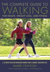
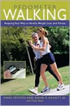
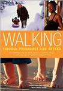

BOOKS
The Complete Guide to walking for health, weight loss, and fitness
by Mark Fenton
Revised Edition Date March 2008
Mark put just about everything he knows about walking into this single comprehensive guide to humankind's best health and fitness activity. From a simple opening quiz that helps you assess your starting point, to a one-year walking program that can take you from the couch to climbing mountains or walking marathons, it's all in here. Mark will answer all of the most common questions: What kind of shoes should I use? Is there a "best" walking technique? How about hand weights and walking poles--good ideas or a waste of money? Should I use a pedometer? How much walking is really enough for health? For weight loss? The program will also help you prepare for a hike or walking in an event or even a race, and provides all the related warm-up, strengthening, and stretching exercises and cross-training activities so that, combined with your walking, you have a comprehensive program for well-being. It's one of the reasons USA Today has called Mark "America's reigning guru of walking.
Pedometer Walking : Stepping Your Way to Health, Weight Loss, and Fitness
by Mark Fenton, David Bassett, Tracy Teare
ISBN-13: 9781592287024
Pub. Date: January 2006
Walking Through Pregnancy and Beyond : How Expectant and New Moms Can Walk Their Way Through a Happy and Healthy Pregnancy and First Year
by Mark Fenton, Lisa Fenton, Tracy Teare
ISBN-13: 9781592283842
Pub. Date: June 2004
DVD
 Walking : The Ultimate Exercise for Optimum Health
Walking : The Ultimate Exercise for Optimum Health
Compact Disc - Unabridged
by Andrew Weil, Mark Fenton
ISBN-13: 9781591794097
Pub. Date: January 2006